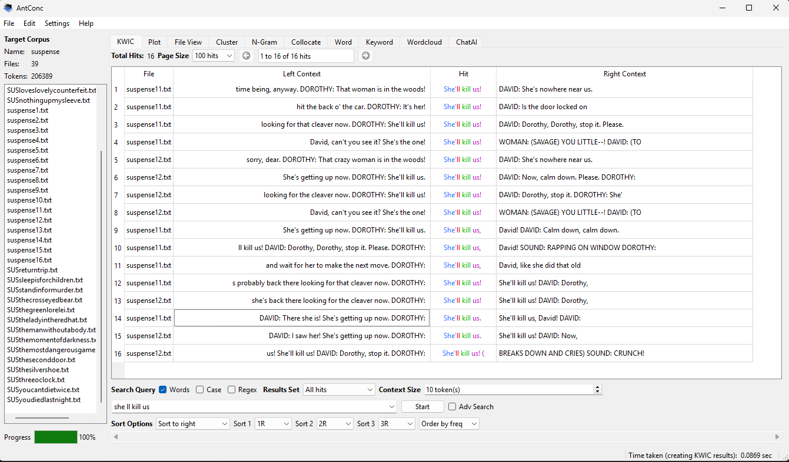
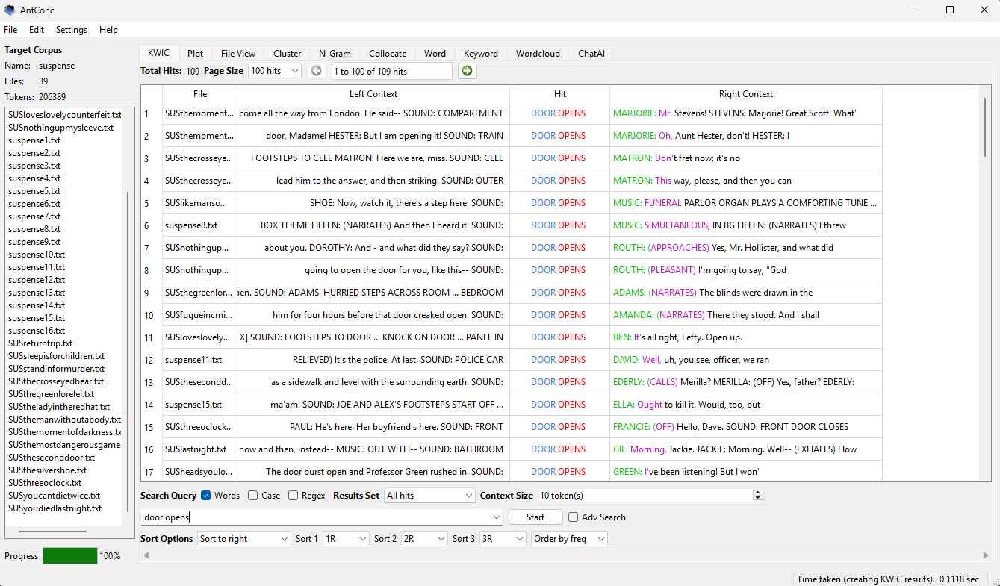
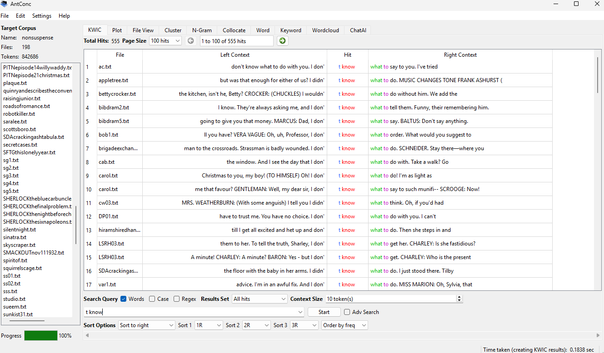
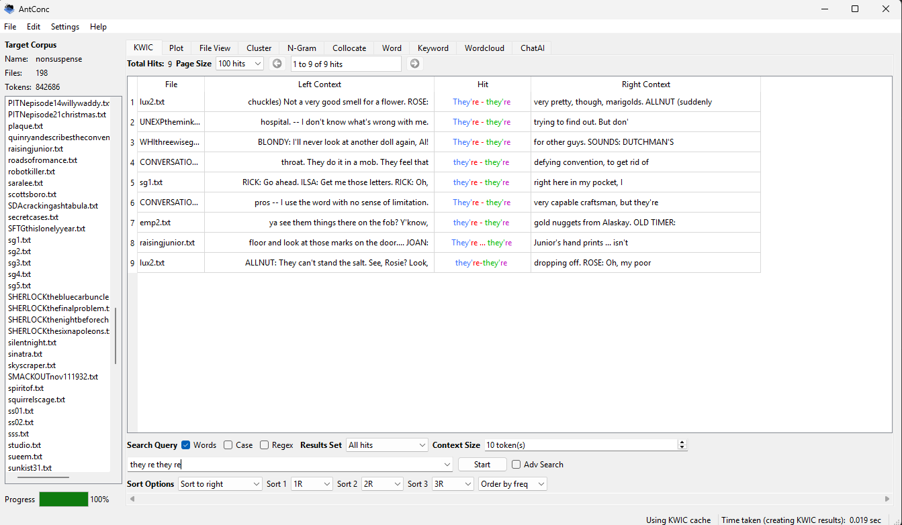

Introduction
For this corpus analysis project, I compared two groups of radio plays: a suspense corpus (SUS) and a non-suspense corpus (NON-SUS). Instead of analyzing individual texts, I grouped multiple scripts together to create larger corpora. This allows for more meaningful patterns to emerge in the analysis.
The suspense corpus contains scripts focused on tension, danger, and dramatic action. The non-suspense corpus contains a wider range of scripts, including conversational, descriptive, and informational dialogue. I used AntConc to analyze repeated n-grams and examine how language differs between these two types of texts.
Method
I analyzed both corpora separately using AntConc. I focused primarily on 2-grams and 4-grams, and used frequency thresholds of 5 and 10 to identify repeated phrases. Instead of relying on raw frequency lists, I used KWIC (Key Word in Context) views to examine how phrases were used in context.
Results: Suspense Corpus
The suspense corpus contains many phrases related to urgency, fear, and action. One of the most significant repeated phrases is she’ll kill us
, which appears across multiple scripts.


These repeated phrases show that suspense scripts rely heavily on emotional intensity and physical action. Dialogue often reflects panic, danger, and urgency, while stage directions reinforce dramatic moments.
Results: Non-Suspense Corpus
In contrast, the non-suspense corpus shows more reflective and conversational language. A common pattern is the phrase don’t know what to...
, which appears with different verbs such as say
, do
, and think
.


Unlike the suspense corpus, these scripts emphasize explanation, discussion, and thought processes rather than immediate action or danger.
Comparison
| Feature | Suspense Corpus | Non-Suspense Corpus |
|---|---|---|
| Common phrases | “she’ll kill us”, “door opens” | “don’t know what to...”, "they're-they're" |
| Language style | Emotional, urgent, action-based | Reflective, conversational, explanatory |
| Function of repetition | Build tension and suspense | Express uncertainty or reasoning |
Discussion
The results show a clear difference between the two corpora. The suspense corpus uses repeated phrases to create tension and urgency, often involving danger or action. In contrast, the non-suspense corpus uses repeated phrases to support conversation and reflection.
This difference becomes clearer when analyzing phrases in context using KWIC. Suspense scripts focus on immediate events and emotional reactions, while non-suspense scripts emphasize explanation and dialogue.
Overall, analyzing larger corpora instead of individual texts made it easier to identify meaningful linguistic patterns and genre differences.